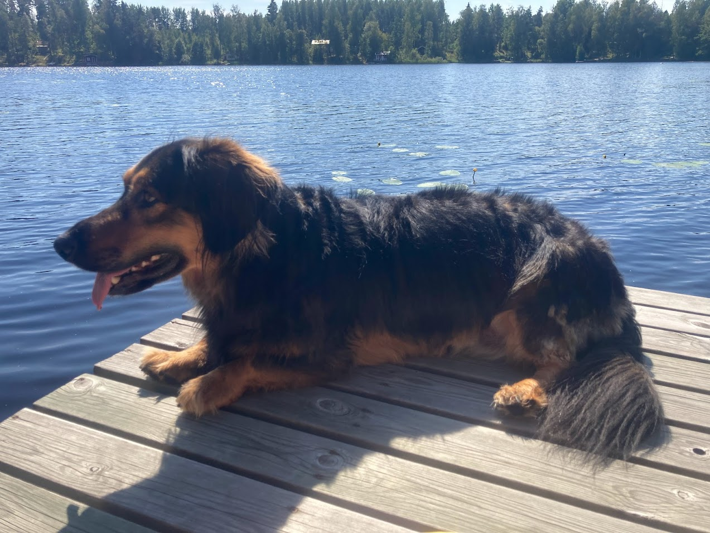

Väinö
Väinö on sekaroituinen koira, josta löytyy mäyräkoiraa, villakoiraa ja cockerspanielia. Väinöstä
kasvoi reilu 20 kiloinen pitkäselkäinen koira, jonka kokoa ei ainakaan pienennä loputon ruokahalu.
Väinö on kova suursyömäri, joka syö kaiken mitä edestään löytää. Väinön kanssa saakin olla tarkkana,
että paino pysyy aisoissa, ja ettei mitään sopimatonta syötävää jää Väinön ulottuville. Ulottuvuutta
Väinöllä riittää yllättävän korkealle.

Väinö on nyt kahdeksanvuotias ja pitää frisbeeleikin sijasta enemmän pallojen kopittelusta. Väinö
on tottunut olemaan kotinsa isoin koira. Kun lenkillä tulee vastaan isompi koira, on Väinöstä
parempi varmuuden vuoksi haukkua, vaikka tutustuminen kiinnostaisikin. Haukkuminen
muille koirille on Väinöstä muutenkin tarpeen, jos ne eivät käyttäydy juuri niin kuin se haluaa.